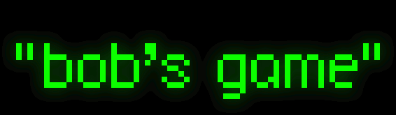

|

"bob's game"™ is a registered trademark™ of robert pelloni™.
all respective trademarks are respective trademarks of their respective companies™. copyright 2013 robert pelloni. all rights reserved. |